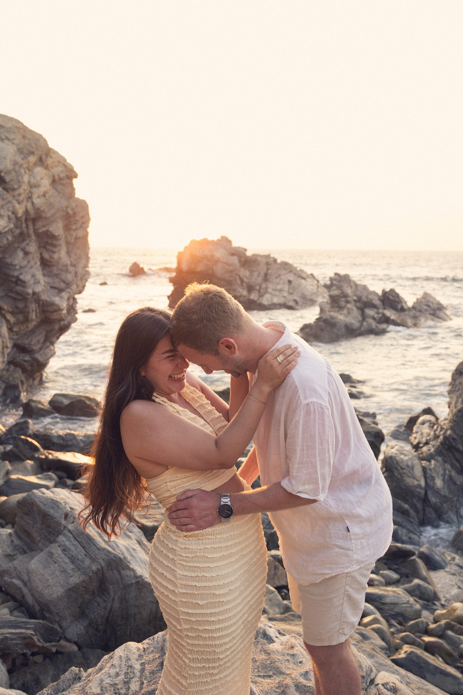
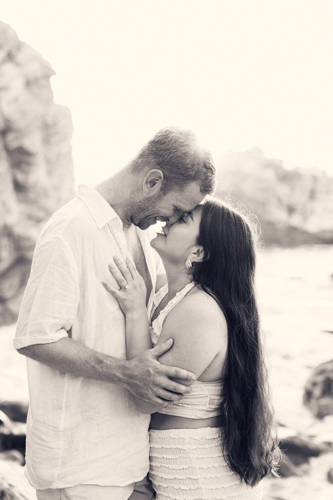
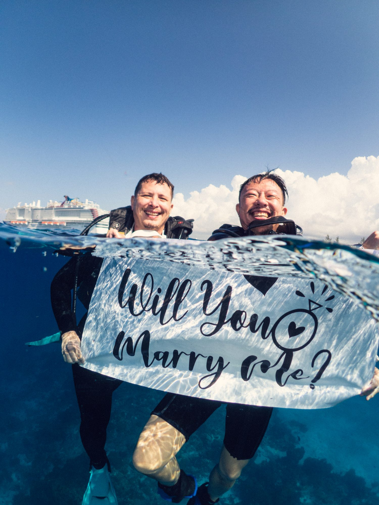
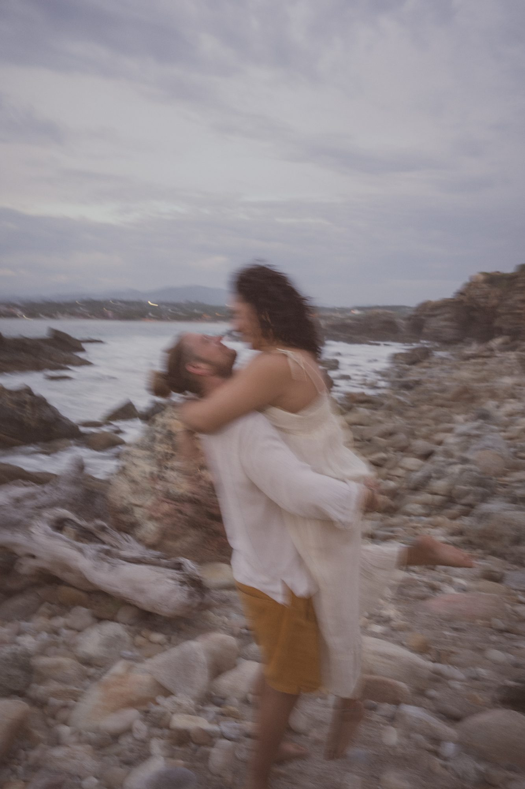
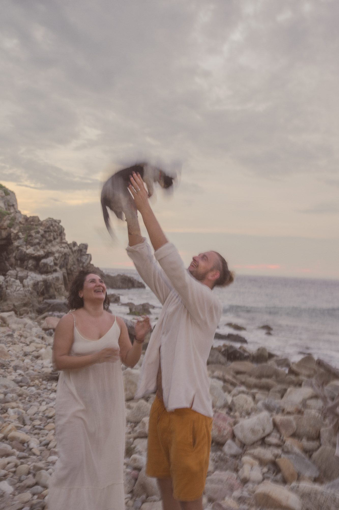
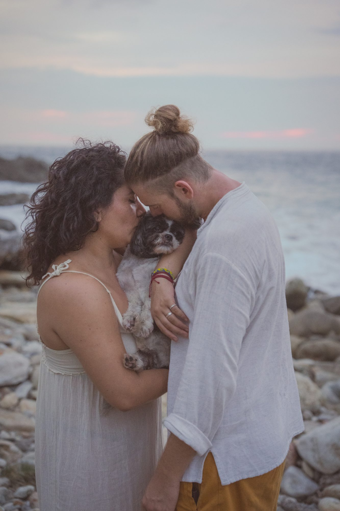
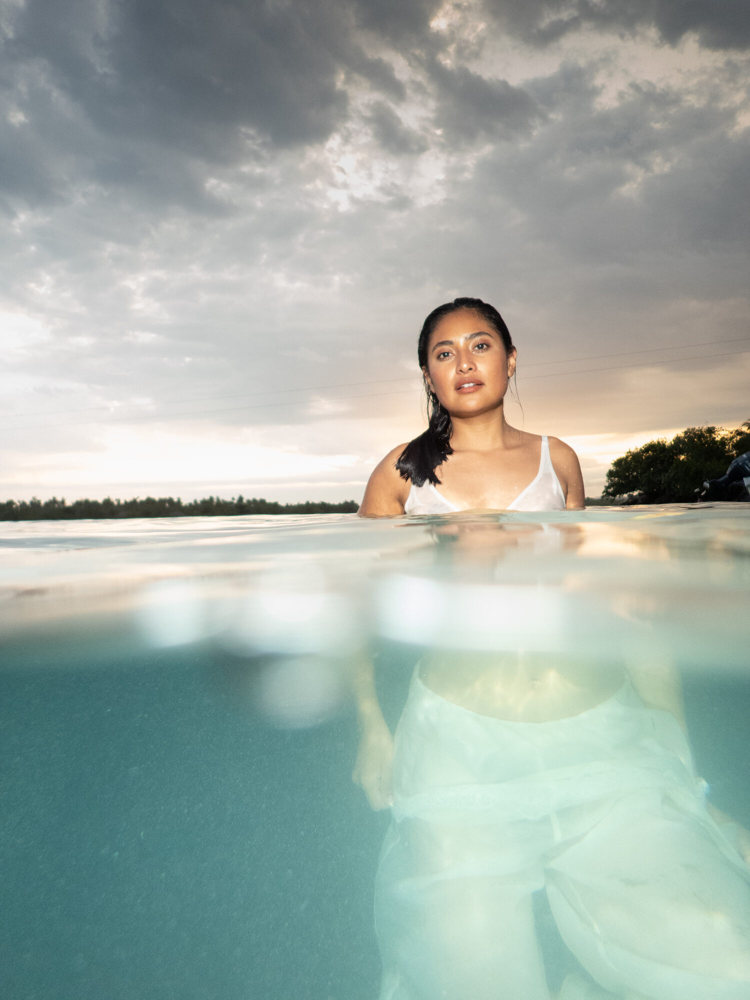
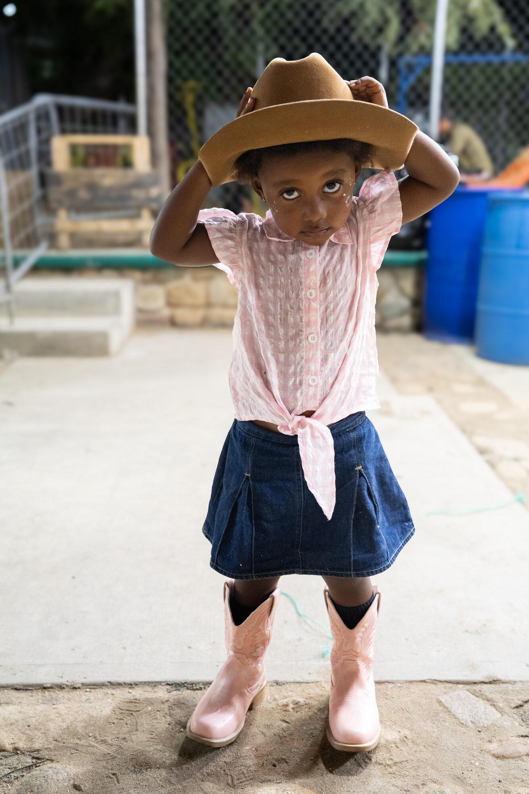
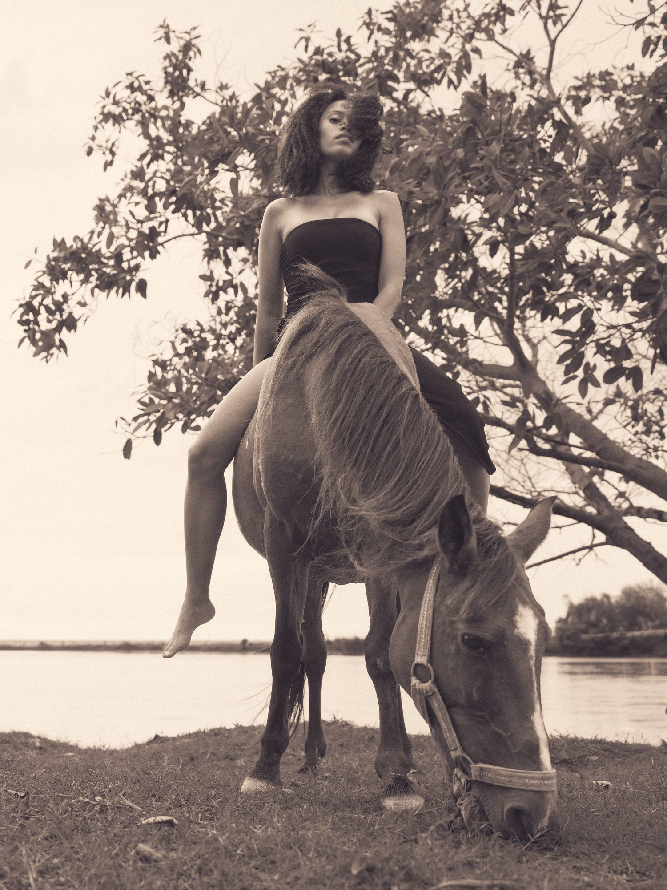
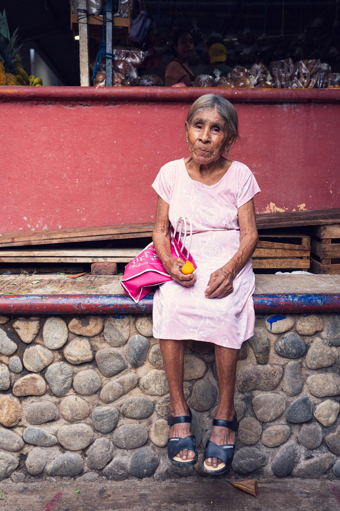

Scuba
Learn to dive
Personal SSI scuba diving courses in Puerto Escondido, private or in a group, from your first breath underwater to certified diver, taught in English or Spanish. Every course includes photos of your dives.
See all courses →Scuba
Personal SSI scuba diving courses in Puerto Escondido, private or in a group, from your first breath underwater to certified diver, taught in English or Spanish. Every course includes photos of your dives.
See all courses →Photography
Couples, proposals and portraits on the beaches and clifftops of Puerto Escondido, plus underwater shoots and events.
See packages & details →Classes
Photography and underwater photography classes: on land, in the water for snorkellers, the SSI Underwater Photo & Video course for divers, and Lightroom editing.
See classes →SSI scuba courses in Puerto Escondido, from a first Try Scuba to your Open Water certification and beyond, private or in a group, at your own pace. Your instructor is also your photographer, so you go home with beautiful memories of your first dives.
See courses & details →


Secret or open proposals, engagements and romantic sessions for two on the beaches and clifftops of Puerto Escondido. Packages from 1,900 MXN.
See packages & details →





Private shoots for you, your family or your brand: natural portraits, editorial and commissioned model shoots, on land or in the water.



